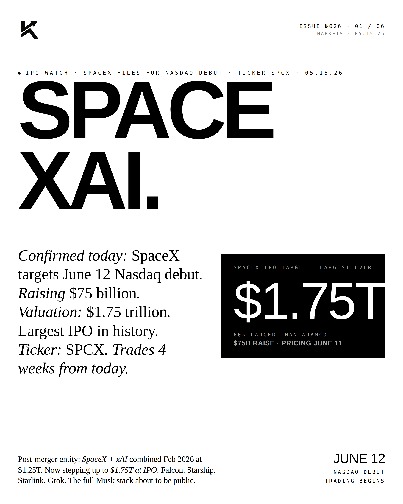
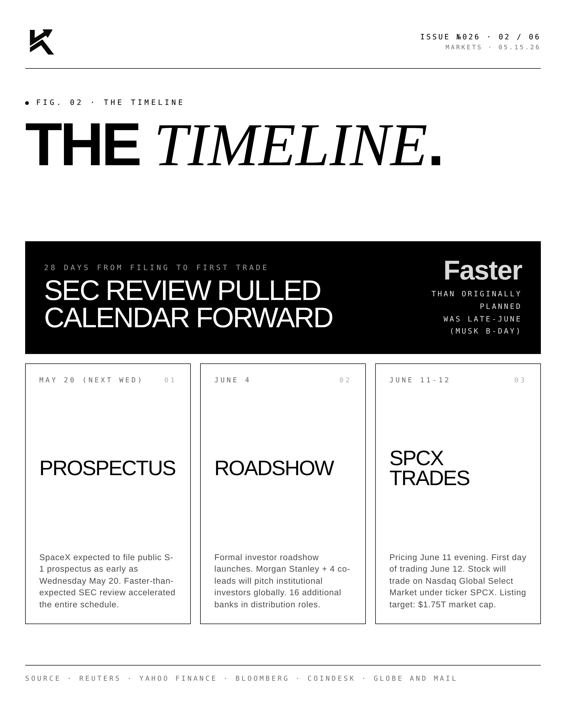
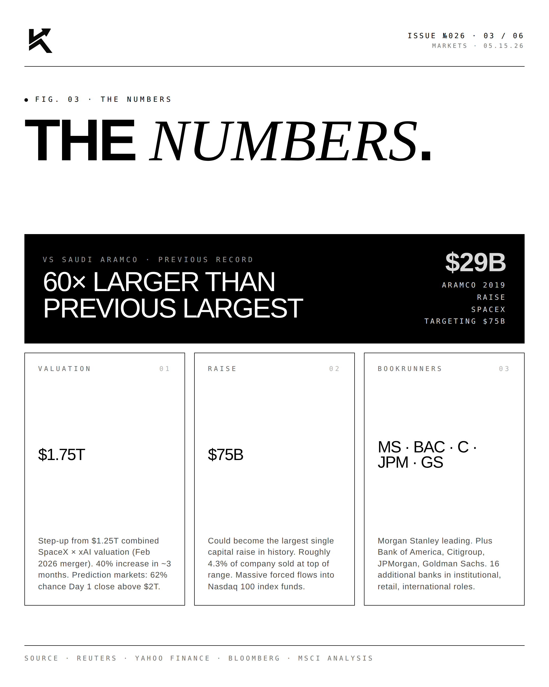
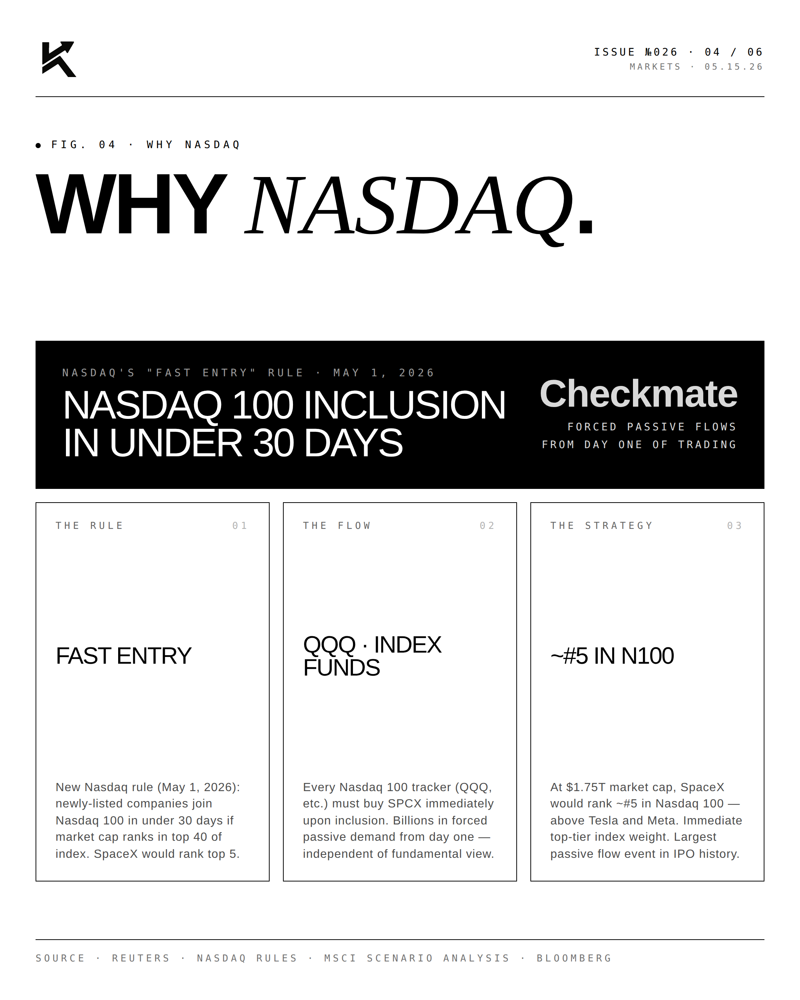
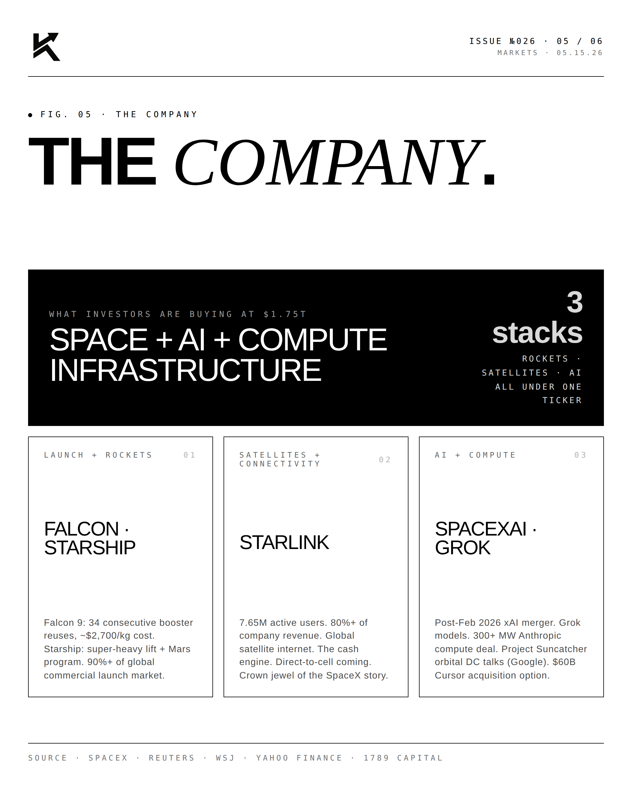
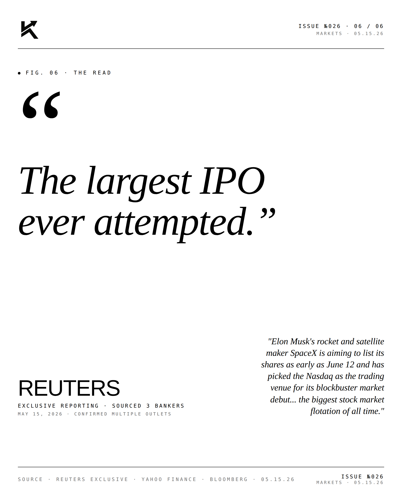

SpaceXAI.
Confirmed today: SpaceX targets June 12 Nasdaq debut. Raising $75 billion. Valuation: $1.75 trillion. Largest IPO in history. Ticker: SPCX. Trades 4 weeks from today.

The Timeline.
Twenty-eight days from filing to first trade. Public prospectus expected to file as early as Wednesday, May 20. Formal investor roadshow launches June 4 globally. Pricing on the evening of June 11. First day of trading on the Nasdaq Global Select Market under ticker SPCX on June 12. The schedule was pulled forward from a late-June target (around Musk's June 28 birthday) due to faster-than-expected SEC review.

The Numbers.
Target valuation: $1.75 trillion — a step-up from the $1.25 trillion combined valuation set at the SpaceX × xAI merger in February 2026. Target raise: $75 billion. Could become the largest single capital raise in history, dwarfing Saudi Aramco's 2019 record of $29.4B by approximately 60×. Lead bookrunners: Morgan Stanley, Bank of America, Citigroup, JPMorgan, Goldman Sachs. Sixteen additional banks in distribution roles. Prediction markets give a 62% probability that the stock closes Day One above $2 trillion.

Why Nasdaq.
Strategic genius. Nasdaq's new "Fast Entry" rule (effective May 1, 2026) allows newly-listed companies to join the Nasdaq 100 in under 30 days provided market cap ranks in the top 40 of index members. At $1.75T, SpaceX would rank approximately #5 in the Nasdaq 100 — above Tesla and Meta. Every QQQ tracker and Nasdaq 100 index fund would be forced to buy SPCX immediately upon inclusion. Billions in passive flows from day one, completely independent of fundamental view.

The Company.
What investors are valuing at $1.75 trillion: three stacks under one ticker. Launch + Rockets: Falcon 9 (34 consecutive booster reuses, approximately $2,700/kg cost), Starship (super-heavy lift + Mars program), with 90%+ of the global commercial launch market. Satellites + Connectivity: Starlink with 7.65M active users providing 80%+ of company revenue — the cash engine. AI + Compute: SpaceXAI division (post-Feb 2026 xAI merger) running Grok models, the 300+ MW Anthropic compute deal, Project Suncatcher orbital DC talks with Google, and the $60B Cursor acquisition option.
"The largest IPO
ever attempted."REUTERSExclusive Reporting · May 15, 2026 · Confirmed Multiple Outlets
Reuters exclusive May 15, 2026, sourced from three bankers: "Elon Musk's rocket and satellite maker SpaceX is aiming to list its shares as early as June 12 and has picked the Nasdaq as the trading venue for its blockbuster market debut... the biggest stock market flotation of all time."


Four weeks from today, the entire Musk infrastructure stack goes public.
Disclosure
The author is a Limited Partner in 1789 Capital, which holds positions in SpaceX and xAI. Personal commentary and editorial analysis. Not investment advice, not an offer or solicitation.